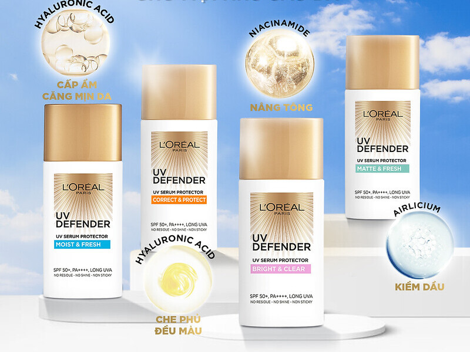
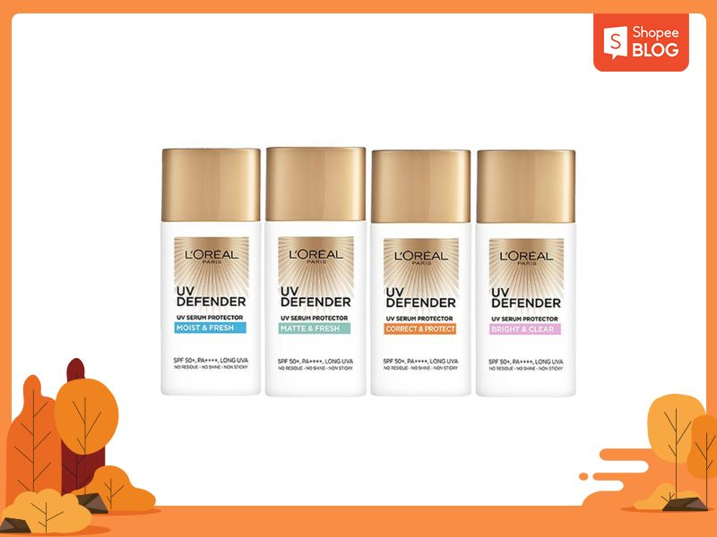

Top 7 kem chống nắng không thấm nước dành cho ngày hè

14/04/2023 LÀM ĐẸP, MỸ PHẨM
Các loại kem chống nắng không thấm nước được xem là “bảo bối” cho những ngày hè nóng nực. Các sản phẩm này giúp bảo vệ da dưới ánh nắng gay gắt ngay cả khi bạn hoạt động dưới nước hoặc ra mồ hôi nhiều khi hoạt động ngoài trời. Sau đây, Shopee Blog sẽ chia sẻ với bạn top 7 loại kem chống nắng không thấm nước được ưa chuộng hiện nay.
Top các loại kem chống nắng không thấm nước được ưa chuộng
Bạn đang tìm kiếm một loại kem chống nắng có thể hoạt động hàng giờ dưới nước mà không bị trôi? Hay đơn giản là loại kem chống nắng giúp bạn bảo vệ da hoàn hảo vào những ngày hè nắng nóng cần hoạt động ngoài trời nhiều? Không để bạn chờ lâu, dưới đây Shopee Blog sẽ mách bạn 7 loại kem chống nắng không thấm nước tốt nhất hiện nay.
Kem chống nắng L’Oreal UV Defender 50ml,SPF 50++của Pháp
L’Oreal Paris UV Defender là kem chống nắng không thấm nước thế hệ mới của thương hiệu L’Oreal. Sản phẩm này được hãng giới thiệu là sở hữu công nghệ tiên tiến và mang đến hiệu quả chống nắng và chống nước tối ưu. Kem chống nắng L’Oreal Paris UV Defender có 4 loại phù hợp với từng loại da khác nhau.
- Matte and Fresh (viền xanh lá): Da thường đến da dầu mụn.
- Correct and Protect (viền cam): Dành cho mọi loại da, đặc biệt da khuyết điểm, cần che phủ.
- Bright and Clear (viền hồng): Phù hợp với những làn da xỉn màu và không đều màu.
- Moist and Fresh (viền xanh dương): Phù hợp với da thường và da hỗn hợp thiên dầu.
Các phiên bản kem chống nắng L’Oreal Paris UV Defender
Thiết kế bao bì và kết cấu sản phẩm
Ở phiên bản mới này, L’Oreal Paris UV Defender đã được hãng thay diện mạo vô cùng với thiết kế hình chữ nhật cầm rất chắc tay. Chất liệu nhựa mang đến cảm giác nhẹ nhàng hơn so với các thiết kế trước đó. Tông chủ đạo màu trắng vàng, phần nắp màu vàng giúp thiết kế trông rất tươi mới.
Để giúp khách hàng phân biệt giữa các phiên bản, hãng còn thiết kế nhãn ở giữa với 4 màu sắc khác nhau giúp bạn có thể lựa chọn sản phẩm phù hợp.
- Matte and Fresh (viền xanh lá): Da thường đến da dầu mụn.
- Correct and Protect (viền cam): Dành cho mọi loại da, đặc biệt da khuyết điểm, cần che phủ.
- Bright and Clear (viền hồng): Phù hợp với những làn da xỉn màu và không đều màu.
- Moist and Fresh (viền xanh dương): Phù hợp với da thường và da hỗn hợp thiên dầu.
Thành phần chính
Sản phẩm có 4 phiên bản với những công thức và hoạt chất khác nhau để đáp ứng với từng loại da khác nhau. Để hiểu rõ hơn về từng loại, cùng Shopee Blog tìm hiểu bảng thành phần của 4 phiên bản kem chống nắng L’Oreal Paris UV Defender nhé.
| Matte & Fresh |
Correct & Protect |
Bright & Clear |
Moist & Fresh |
- Hai màng lọc chống nắng mexoryl SX và XL: có khả năng ngăn ngừa các tia có hại như UVA và UVB trong nhiều giờ đồng hồ
- Niacinamide: giúp củng cố hàng rào bảo vệ da và cải thiện các vùng da sậm màu.
- Air Licium: đóng vai trò kiểm soát bã nhờn trên da giúp da thoáng và ít tiết dầu hơn.
|
- Ethylhexyl Methoxycinnamate: giúp tăng khả năng hấp thụ tia UVB từ ánh nắng mặt trời, bảo vệ làn da khỏi những hư tổn.
- Drometrizole Trisiloxane và hợp chất Mexoryl XL: có khả năng hấp thụ bức xạ UV phổ rộng.
- Hyaluronic Acid: có khả năng giúp da giữ nước, làm cho bề mặt da ẩm mượt và căng mịn hơn.
|
- Màng lọc chống nắng Mexoryl SX & XL: giúp bảo vệ da dưới mọi tia UVA và UVB trong suốt 8 tiếng.
- Niacinamide: giúp bảo vệ, làm sáng da và mờ các vết thâm.
|
- Hyaluronic Acid: có khả năng giữ lượng nước trên da gấp 1000 lần, giúp dưỡng ẩm sâu cho da, bề mặt căng mịn và hạn chế các vấn đề lão hóa.
- Air Licium: Có tác dụng kiểm soát dầu thừa trên da, giúp lỗ chân lông trở nên thông thoáng hơn.
|
Ưu điểm và nhược điểm của sản phẩm
Mỗi loại kem chống nắng chống thấm nước của L’Oreal đều có thành phần và công dụng khác nhau. Tuy nhiên, những sản phẩm này đều có những ưu và nhược điểm sau.
Ưu Điểm
- Khả năng chống nắng hiệu quả cao bởi màng lọc chống nắng Mexoryl độc quyền.
- Thiết kế bao bì đẹp, thanh lịch và nhỏ gọn.
- Kết cấu mỏng nhẹ, dễ tán.
- Mùi thơm dễ chịu.
- Có 4 phiên bản phù hợp với các nhu cầu sử dụng khác nhau.
- Là kem chống nắng vật lý lai hoá học nên khắc phục được nhiều nhược điểm của cả hai loại này.
Nhược Điểm
- Có chứa cồn và hương liệu nên sản phẩm không phù hợp với những làn da quá nhạy cảm.
- Khả năng kiềm dầu của sản phẩm chỉ ở mức tương đối.
Nhìn chung, kem chống nắng L’Oreal Paris UV Defender có chỉ số chống nắng chống nắng thích hợp, giúp chống nắng nhiều giờ trên da. Ngoài ra, thành phần vật lý lai hoá học cũng giúp sản phẩm chống nắng và chống nước tốt hơn khi hoạt động ngoài trời. 4 phiên bản của sản phẩm sẽ giúp bạn dễ dàng tìm được loại phù hợp với da của mình. Giá thành cũng phải chăng nên có thể ứng dụng để làm kem chống nắng body không thấm nước.
Giá tham khảo: 259.000 VNĐ/tuýp 50ml.

Kem chống nắng chống thấm nước L’Oreal Paris UV Defender